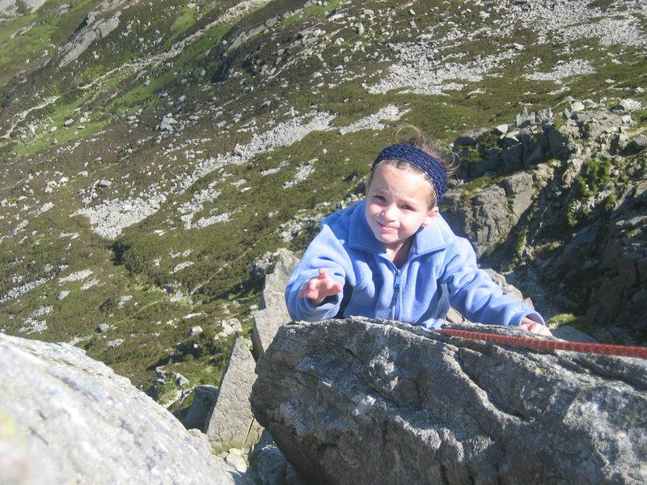
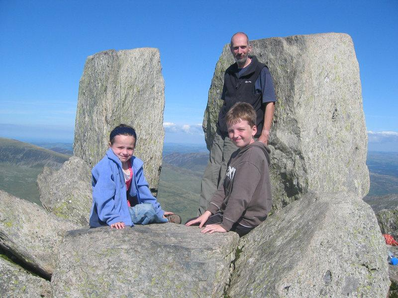

First Pinnacle Rib Tryfan
Base camp at Gwern y gof Uchaf.

After the wettest June and July that anyone can remember the sun finally came out in the last few days of July. I had promised John and Ella that we could camp go climbing in North Wales. We didn't set off from home until after six o'clock, so by the time we had eaten at the Bryn Tyrch in Capel Curig the sun had begun to set. We camped at Gwern y Gof Uchaf just beneath Tryfan. We were surrounded by clouds of midges as we put the tent up and were glad to get into our sleeping bags.
On Tuesday morning there was hardly a cloud in the sky. I cooked some bacon on the Trangia and started to pack the rucksack. Looking into the rucksack I realized that my boots, harness and gear weren't in there. I '''always'' leave them there, so I won't need to think about having to pack them. However, I vaguely remembered that on our last trip to the Lakes I had packed my gear into a different sack.
Tipping everything out, I found John and Ella's harnesses and boots and Anne's harness. I tried Anne's harness and managed to get it on with a bit of a squeeze. There were three Rocks and a couple of quick draws clipped to the outside of the rucksack, which would have to do. The most annoying thing was not having any rock boots. I hate climbing in big boots and even worse the only footwear I had with me was some ill fitting trainers.
It was obviously going to be hot, so I packed plenty of drinks and we set off over the back of Little Tryfan to climb up to Heather Terrace. When we arrived at the Terrace there was no one else climbing, so we sat down to eat an early lunch. Just as we had finished eating a couple and their daughter arrived and announced that they were going to climb First Pinnacle Rib too, but they would be happy to let us go first.
Finding the start of climbs on Heather Terrace can be tricky. Luckily FPR is just the other side of ?? Gully from Gashed Crag, which is easily identifiable by the "Gash". To make life even easier the route has IPR scratched into the rock. This "feature" was there when I first climbed the route in the early 1980's. I suspect that someone must have renewed the scribblings over the years, or it would have weathered away.
Just as I was getting ready to climb a third group arrived, but seeing that FPR was going to be rather crowded they moved off to another route.
The first pitch goes up a slabby corner and round under an overhang. In sticky boots this is easy, but in bendy trainers and carrying a heavy rucksack it proved to be a bit tricky. I managed to get in one of my three Rocks, which I hope would slow me down a bit if I fell off. The children haven't yet been taught how to belay, so at the moment all our climbing is strictly of the "Leader must not fall" variety. Luckily, one of the other party offered to belay me up this section.
I flopped onto the first ledge and brought John and Ella up to me. We climbed in fairly short pitches of about 25 metres, partly because I was climbing on a single rope doubled and it makes it easier to keep an eye on the children if you do short pitches.
Difficulties can be avoided on much of the route if you wish. However, tackling the ridge directly maintains the interest of the climb throughout. When I have climbed FPR in the past, I was climbing regularly and was much younger and fitter. In the past I had rushed up the route as fast as possible and not taken enough time to enjoy it. Climbing much more slowly with the children, in perfect weather, allowed me to appreciate the route.
Eventually we arrived below the Yellow Slab. This is a lot harder than anything else on the route. There are a couple of balancy steps on very polished rock, leading to a huge jug. Definitely not the sort of thing you want to do in bendy trainers with a big sack.
Luckily you can sneak round along a ledge to the right and climb a short groove (graded Severe) to avoid the Yellow Slab (a mere Diff). The groove wasn't too easy either. The bottom few feet were damp and devoid of many footholds that bendy trainers would work on. Fortunately, there is a nice finger jamming crack in the back of the groove and a few stiff pulls with slithering feet brought better holds in reach.
Ella on the final pitch.
{kind=link}
The final pitch is superb. A long airy rib with big holds just where you need them. If you haven't had enough, you can finish up Thompson's Chimney to the summit. This isn't anything like as horrible as it looks. However, we decided to avoid it anyway and scramble up to Adam and Eve. This was John and Ella's first three thousand foot mountain - what a great way to get to the summit.
We descended to Bwylch Tryfan and then straight down a horrible scree slope to the Cwm. By now my feet were really painful and I hobbled back down to the camp site, while John and Ella strode off in front.
Summit next to Adam and Eve.
{kind=link}
We chucked everything in the back of the truck and went back to the Bryn Tyrch before driving home. Just to prove that my trainers were really uncomfortable, both my big toe nails turned black and dropped off after a month or so. At least the trainers were cheap, so I didn't mind consigning them to the dustbin where Anne immediately took them out as they had plenty of wear left in them.